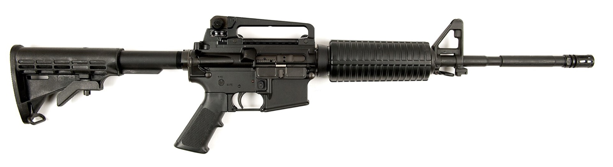

Professional Rifle Shooting
Precision fundamentals for the rifle and carbine: the shot process, positions, natural point of aim, trigger control, zeroing, MOA and mils, wind, and reading your groups. The animations show what the shooter controls and what changes on the target.

Built on U.S. Army TC 3-22.9 Rifle and Carbine and standard known-distance marksmanship practice. Trajectory and wind figures come from a G1 drag-model solver for a 5.56 mm, 55-grain load from a 20-inch barrel with a 2.6-inch sight height. The ballistic calculator runs the same solver for any load you pick.
01Safety
The four rules
- Treat every firearm as if it's loaded.
- Never point the muzzle at anything you aren't willing to destroy.
- Keep your finger off the trigger until your sights are on the target and you've decided to fire.
- Be sure of your target and what's beyond it.
Rifle-specific
- Rifle rounds carry far. A 5.56 mm bullet can travel over 2 miles; a .308 farther. Every shot needs a backstop.
- Use a chamber flag or empty-chamber indicator whenever the rifle is benched or cased.
- Check the bore after any squib (weak report, no visible impact) before firing again.
- Hearing and eye protection every time. A muzzle brake roughly doubles the noise at the shooter's side.
On the range
A shared range runs on commands from the range safety officer (RSO). Listen for them the whole time you're on the line. With hearing protection on, commands are easy to miss: electronic muffs make speech easier to hear, and you should watch the RSO, the range lights or flags, and the shooters on either side. If everyone around you has stopped, stop and find out why.
| Command | What it means | What you do |
|---|---|---|
| "The range is hot" | Live fire is allowed. Nobody is forward of the firing line. | Eye and ear protection on, including behind the line. Handle firearms only at your position on the line, muzzle downrange. |
| "Commence fire" | You may load and shoot. | Load only now, and only at the line. Wait for this even when the range has been called hot. |
| "Cease fire" | Stop shooting immediately. Anyone who sees a danger can call it, and everyone obeys it no matter who called it. | Finger off the trigger and out of the guard, muzzle downrange, and stay where you are. Don't load, unload, or step back until the RSO tells you what to do next. |
| "Unload and show clear" | Make your firearm safe and let the RSO check it. | Remove the ammunition, open and lock the action, and show the empty chamber to the RSO. |
| "Is the line clear?" / "The line is clear" | The RSO is confirming, then announcing, that every firearm on the line is unloaded with its action open. | Your gun is benched or racked: action open, chamber flag in, magazines out. Step back behind the safety line. |
| "The range is cold" | Nobody touches a firearm. People may go downrange to check or change targets. | Hands off guns and ammunition, including loading magazines at the bench, until the range is called hot again. Stay behind the safety line unless you're going downrange. |
Wording varies by range and organization; some use "the line is safe," whistles, or lights. Read the posted range rules and listen to the briefing before you shoot. The principle doesn't change: firing stops on a cease fire, and no one goes forward until every gun is verified clear.
Clear the gun before you step off the line
- Finger off the trigger, muzzle downrange.
- Remove the ammunition source first: magazine out, or the magazine tube emptied.
- Open the action and lock it open. Any round in the chamber comes out.
- Look and feel: check the chamber and the magazine well or tube by eye, then with a finger. Do the check every time, even when you're sure it's empty.
- Insert a chamber flag if the range requires one.
- Bench, rack, case, or holster it the way the range rules say. Never walk away from a loaded gun or carry one off the line.
Rifle: drop the magazine before you pull the charging handle. In the other order, the bolt chambers a fresh round as it closes. Lock the bolt to the rear and look into both the chamber and the magazine well.
02The shot process
TC 3-22.9 describes every shot through four functional elements, applied in a pre-shot, shot, and post-shot sequence. Each element is something you can observe and correct.
Four functional elements
- Stability: a position that holds the rifle steady with bone support and minimal muscle.
- Aim: sight alignment, sight picture, and point of aim on the target.
- Control: everything you manage at the moment of firing: trigger, breathing, follow-through, and the decision to fire.
- Movement: moving to and between positions while keeping the rifle ready.
Shot sequence
Pre-shot
Build the position, check natural point of aim, confirm the sight setting and wind hold.
Shot
Settle at the respiratory pause, refine the aim, press the trigger straight to the rear.
Post-shot
Hold the trigger to the rear, keep the sight picture through recoil, call the shot, reset.
03Ammunition
Bullet weight is measured in grains; there are 7,000 grains in a pound. For a given cartridge, lighter bullets leave faster and shoot flatter up close; heavier bullets carry velocity and resist wind better at distance, and usually penetrate deeper. Changing weight or type moves your point of impact, so re-confirm your zero when you change loads.
| Cartridge | Common weights | Common types | Typical velocity | Typical use |
|---|---|---|---|---|
| .223 Rem / 5.56×45 NATO | 40–77 gr 55 · 62 · 69 · 75 · 77 | 55 gr FMJ (M193), 62 gr steel-core FMJ (M855), bonded soft point, open-tip match (OTM), polymer tip | 2,750–3,250 ft/s (16–20" barrel) | Training, defense, varmint, match to 600 yd |
| .308 Win / 7.62×51 NATO | 110–180 gr 147 · 150 · 165 · 168 · 175 | 147 gr FMJ (M80), soft point, bonded, hollow-point boat-tail match (M118LR 175 gr) | 2,550–2,850 ft/s (20–24" barrel) | Medium and large game, precision to 1,000 yd |
| 9mm Luger (9×19) | 115 · 124 · 147 gr | FMJ, jacketed hollow point (JHP), +P JHP, frangible | 950–1,250 ft/s (4") +100–200 from a 16" carbine | Carry, duty, training, pistol-caliber carbine |
| .45 ACP | 185 · 200 · 230 gr | 230 gr FMJ ("ball"), JHP, +P JHP | 830–1,000 ft/s (5") | Carry, duty, competition |
| Bullet type | What it is | Use |
|---|---|---|
| FMJ (full metal jacket, "ball") | Lead core fully covered by a copper jacket at the nose | Training, practice; penetrates deeply and expands little |
| JHP (jacketed hollow point) | Cavity in the nose that opens on impact | Handgun defense; expands to a larger diameter and stays in the target more often |
| SP (soft point) | Exposed lead tip on a jacketed bullet | Hunting; controlled expansion |
| Bonded | Core chemically bonded to the jacket so they don't separate | Defense and hunting through barriers such as glass |
| OTM / HPBT (open-tip match / hollow-point boat-tail) | Small opening from manufacturing, tapered base; very consistent | Precision and match; the 75–77 gr 5.56 loads also fragment reliably |
| Polymer tip | Plastic tip on a hollow point; flatter trajectory, starts expansion | Hunting, varmint, some defense loads |
| Steel-core (M855 "green tip") | Small steel penetrator ahead of a lead core | Military general purpose; not a hunting bullet, banned at some ranges |
| Frangible | Compressed copper powder that breaks apart on hard surfaces | Steel targets at close range, shoot houses |
| +P / +P+ | Loaded to higher pressure for more velocity | Only in guns rated for it; more recoil and wear |
.223 vs. 5.56
The cases look the same, but 5.56 NATO is loaded to higher pressure and the 5.56 chamber has a longer throat. .223 is safe in a 5.56 or .223 Wylde chamber. 5.56 in a chamber marked .223 Rem only can produce excess pressure. Check the barrel marking.
.308 vs. 7.62 NATO
Close but not identical in chamber dimensions and pressure. Most modern .308 rifles handle 7.62 NATO; check the manufacturer's guidance, especially on older or surplus rifles.
04Positions
Stability comes from bone, not muscle. The lower and more supported the position, the smaller your wobble. Use the most stable position the terrain and time allow.
| Position | Key points | Typical use |
|---|---|---|
| Prone (supported) | Bipod or bag under the handguard, body straight behind the rifle or at a slight angle, firing-side leg drawn up to lift the chest off the ground. | Known-distance shooting, zeroing, long range |
| Prone (unsupported) | Support elbow directly under the rifle, sling tension if available, firing elbow planted. | No support available, still the steadiest field position |
| Sitting | Open-leg, crossed-leg, or crossed-ankle. Flat of the upper arms rests against the inside of the knees, not elbow point on kneecap. | Over grass or low cover |
| Kneeling | Support elbow just ahead of the knee, buttock on the heel, firing-side foot under you. Shift weight forward into the rifle. | Quick, gets over obstacles, transitions well |
| Standing | Feet shoulder-width, support arm under the rifle or extended on the handguard, firing elbow comfortable. Use any available support. | Close range, movement, no time |
05Natural point of aim and breathing
Natural point of aim (NPA) is where the rifle points when your body is relaxed in position. If you have to muscle the rifle onto the target, it drifts back toward NPA as the shot breaks. Adjust the position until the rifle rests on the target by itself.
Checking NPA
- Get into position and aim at the target.
- Close your eyes, take a few normal breaths, and relax.
- Open your eyes. If the reticle has moved off the target, shift your whole body, not just the arms.
- For left and right, pivot around the support elbow (prone) or move your feet. For elevation, slide your body forward or back or adjust the support.
Breathing
The chest rises and falls with every breath, which moves the reticle up and down. After you exhale there's a natural pause of 2–3 seconds when the body is still. Break the shot in that pause. If it runs long and your vision starts to blur, breathe again and restart; don't hold your breath past it.
06Sights and optics
| Sighting system | Strengths | Limits | Fit |
|---|---|---|---|
| Iron sights | No batteries, durable, light | Three focal planes (rear, front, target); harder for older eyes and at distance | Backup; learning fundamentals |
| Red dot | Both eyes open, fast, forgiving of head position | No magnification; dot size covers small targets at distance | Out to about 300 yd on man-size targets |
| Low-power variable (LPVO) | 1× for close work, 6–10× for distance | Heavier; eye box tighter at high power | General-purpose carbine |
| Magnified scope | Precise aim, reticle holds and ranging | Narrow field of view, slower up close | Precision rifle, beyond 300 yd |
First vs. second focal plane
First focal plane (FFP): the reticle grows with magnification, so mil and MOA holds are correct at every power. Second focal plane (SFP): the reticle stays the same size, so holds are correct only at the power the maker specifies, usually the highest.
Eye relief and parallax
Set eye relief so you see a full, shadow-free image with your head in a natural spot on the stock. Adjust parallax at the target distance until the reticle doesn't shift on the target when you move your head slightly.
07Trigger control and follow-through
The trigger press is the one moment where small errors become misses. Press straight to the rear with steadily increasing pressure, so the moment the shot breaks surprises you a little. Then hold it to the rear through recoil and let it out only to the reset.
Finger placement
Use the pad of the index finger, between the tip and first joint, so the press is straight back. Too little finger pushes the shot; too much pulls it. Keep the rest of the hand from tightening as the finger moves.
Follow-through
Keep the trigger pinned, keep your eye on the sight picture, and stay in position for a second after the shot. Then let the trigger forward until it clicks (the reset) and call the shot: say where the sights were when it broke.
08Zeroing and trajectory
The sights look along a straight line. The bullet leaves the bore below that line, climbs across it, and falls back across it. A zero sets the angle between the two so the bullet crosses the line of sight at the distances you choose.
| Zero | 25 yd | 50 yd | 100 yd | 200 yd | 300 yd | 400 yd |
|---|---|---|---|---|---|---|
| 50 yd (far zero ≈240) | −1.2" | 0.0" | +1.6" | +1.5" | −4.5" | −18.3" |
| 100 yd | −1.6" | −0.8" | 0.0" | −1.8" | −9.4" | −24.9" |
| 300 yd (near zero ≈38) | −0.8" | +0.7" | +3.1" | +4.5" | 0.0" | −12.3" |
Computed with the G1 drag model for 55 gr M193 (BC 0.243) at 3,240 ft/s from a 20-inch barrel, 2.6-inch sight height, sea-level standard conditions. From a 14.5–16 inch carbine, the 50-yard zero's far zero moves in to roughly 200–225 yd, which is where the "50/200" name comes from. Run your own load in the calculator below.
Zeroing procedure
- Bore-sight or start close (25 yd) to get on paper.
- From a supported prone position, fire a 3- or 5-shot group. Don't adjust off single shots.
- Measure from the group's center to the point of aim, in inches.
- Convert to clicks: inches ÷ (click value × distance ÷ 100). A ¼-MOA click moves about 0.26" at 100 yd.
- Adjust in the direction you want the group to move ("up" moves impact up).
- Fire another group. Repeat until the group center is on the point of aim, then confirm at the far zero distance.
Choosing a zero
- 50 yd ("50/200"): bullet stays within about 2.2 inches of the line of sight from 25 yd out past 250 yd. Common general-purpose carbine zero.
- 100 yd: standard for magnified optics and dialing. Simplest to use with a ballistic table.
- 300 yd ("36/300"): maximum point-blank reach on a man-size target; up to about 4.5 inches high around 175–200 yd.
09Ballistic calculator
Pick a cartridge and load, or type your own chronographed velocity and the bullet's published G1 ballistic coefficient. The table and chart update as you change anything. Set "Hold at" to a distance to get the exact elevation and wind hold.
10MOA, mils, and range
Both are angles. An angle covers more inches the farther away the target is, which is why scope adjustments and holds are expressed as angles instead of inches.
| Unit | At 100 yd | Common click | Ranging formula |
|---|---|---|---|
| MOA | 1.047" | ¼ MOA = 0.26" | Range (yd) = size (in) × 95.5 ÷ MOA |
| Mil | 3.6" | 0.1 mil = 0.36" | Range (yd) = size (in) × 27.78 ÷ mils |
Range from a reticle reading
Measure a target of known size in your reticle, then enter it here. A standard IPSC/USPSA target is about 18 inches wide; an average adult torso is about 18–20 inches wide.
11Wind
Wind pushes the bullet sideways for its whole time of flight, so drift grows faster than distance. Only the crosswind component matters for drift. The wind clock tells you how much of the wind's speed counts.
| Clock direction | Value | Drift at 300 yd, 10 mph, 55 gr M193 |
|---|---|---|
| 3 or 9 o'clock | Full (100%) | ≈ 11.9" |
| 2, 4, 8, or 10 o'clock | ≈ 87% | ≈ 10.3" |
| 1, 5, 7, or 11 o'clock | Half (50%) | ≈ 5.9" |
| 12 or 6 o'clock | No value | ≈ 0" |
Estimating speed
- Under 3 mph: hardly felt; smoke drifts.
- 3–5 mph: felt on the face.
- 5–8 mph: leaves and grass in constant motion.
- 8–12 mph: loose paper moves, small branches sway.
- 12–15 mph: small trees sway.
Reading mirage
Through a scope focused just short of the target, heat shimmer shows wind between you and the target. Boiling straight up means little or no crosswind. A gentle lean means light wind; flat, fast-running mirage means strong wind. Mirage that suddenly boils after running usually means the wind is changing direction.
12Reading your groups
The shape of a group tells you more than any single shot. Shoot groups of five, then diagnose. These are starting points; confirm with your shot calls.
| Pattern | Likely causes | Fix |
|---|---|---|
| Tight, centered | Good fundamentals and zero | Sustain; move back or shrink the target |
| Tight, off center | Zero, or a consistent hold or wind error | Adjust sights only after confirming with a second group |
| Vertical string | Breaking shots at different points in the breath, NPA off vertically, inconsistent cheek weld or bag pressure | Fire in the respiratory pause; check NPA elevation; same cheek weld each shot |
| Horizontal string | Trigger pushed or pulled, rifle canted, changing wind, NPA off left or right | Finger placement; level the rifle; watch wind indicators; check NPA |
| Large and round | General inconsistency: position, focus, trigger | Slow down; dry-fire; rebuild the position from the ground up |
| One flyer | One bad shot, usually called as bad | Ignore it if you called it; investigate if you didn't |
13The data book
A data book (DOPE, for "data on previous engagements") records what the rifle actually did. Over time it becomes the most accurate ballistic table you have, because it's built from your rifle, ammunition, and conditions.
| Field | Example entry |
|---|---|
| Date, time, location | 10/24, 0930, home range, 840 ft elevation |
| Rifle, optic, ammunition, lot | 16" carbine, 1–6× LPVO, 77 gr OTM, lot 4417 |
| Weather | 54°F, 29.92 inHg, 60% humidity |
| Distance and target | 300 yd, 10" steel |
| Elevation used | +1.6 mil from 100-yd zero |
| Wind call and hold | 5–7 mph from 9 o'clock, held 0.6 mil left |
| Shot calls and results | 5 shots, 4 hits, one called low-left |
| Notes | First shot from cold bore 0.5" high |
14Drills and standards
| Drill | Setup | Standard | Builds |
|---|---|---|---|
| 5-shot groups | 100 yd, supported prone, no time | Under 2 MOA with service ammunition; under 1 MOA with match ammunition and a precision rifle | Baseline accuracy, trigger |
| Dot drill | Ten 1-inch dots at 25 yd, one shot each | 10 of 10 inside the dots | Trigger control and focus |
| Position ladder | 3 shots each from prone, sitting, kneeling, standing on the same 8" plate at 100 yd | All hits in 90 seconds total | Building positions quickly |
| Known distance | Plates at 100, 200, 300 yd | First-round hit at each distance from a 100-yd zero using your data book | Holds, data book use |
| Wind ladder | Same 300-yd target across a day with changing wind | Log every call and correction | Wind reading |
| Ready-up | From low ready, one shot on a 3×5 card at 50 yd | Under 2.0 s with a red dot | Mount, sight acquisition |
15Maintenance
Routine
- Clear the rifle and verify empty before you start.
- Clean the bore from the chamber end toward the muzzle with a rod guide to protect the throat.
- Wipe the bolt and carrier; scrape carbon off the bolt tail and inside the carrier.
- Lubricate per the manufacturer: on an AR-pattern rifle, the bolt carrier rails, cam pin, and bolt rings run wet.
- Do a function check after reassembly.
Checks
- Optic and mount screws witness-marked and checked against the maker's torque values.
- Gas key staking intact; extractor spring strong.
- Magazines: clean, feed lips straight, springs strong. Number them so you can track a bad one.
- Record round count. Barrels and some parts have expected service lives.
16Common errors
| Error | What it does | Fix |
|---|---|---|
| Muscling the rifle onto target | Rifle drifts back to natural point of aim as the shot breaks | Check NPA; move the body, not the arms |
| Holding your breath too long | Wobble grows, vision blurs, shooter rushes the press | Break inside the 2–3 s pause or breathe and restart |
| Jerking or slapping the trigger | Shots low and to the side opposite the firing hand | Smooth press; dry-fire with a coin or dummy round |
| Anticipating recoil | Pushing into the stock before the break; low shots | Ball-and-dummy drill; let the shot surprise you |
| Lifting the head to look | Loses follow-through and the shot call | Stay in the gun for a full second after the shot |
| Canting the rifle | Shots go low and to the side of the cant at distance | Use a bubble level; same cheek weld every shot |
| Adjusting off one shot | Chases random error | Adjust only off the center of a group |